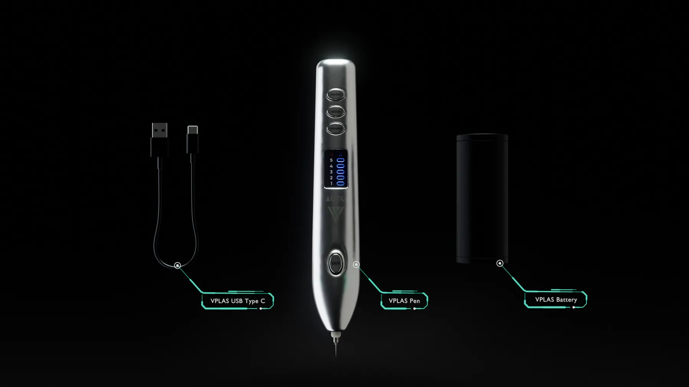
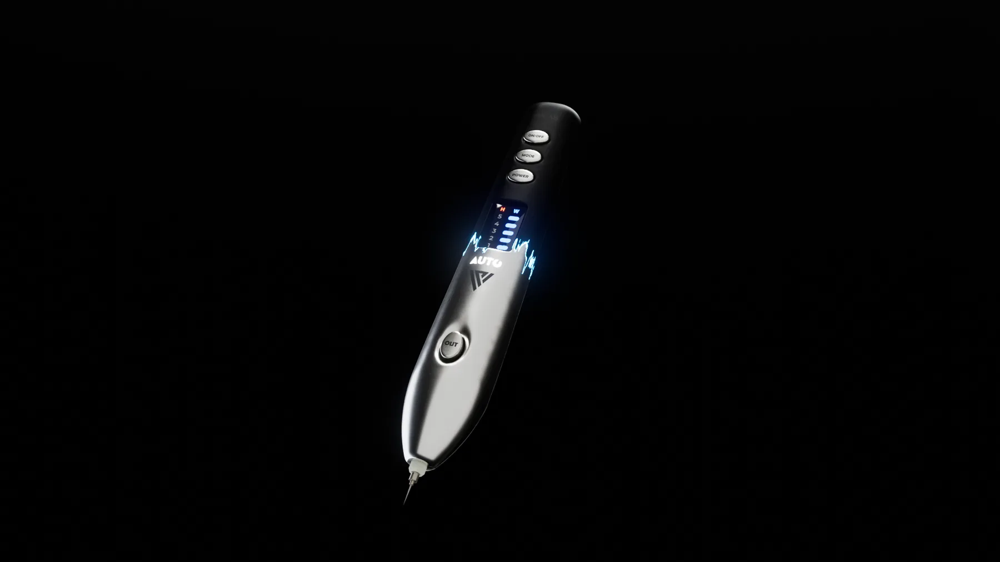
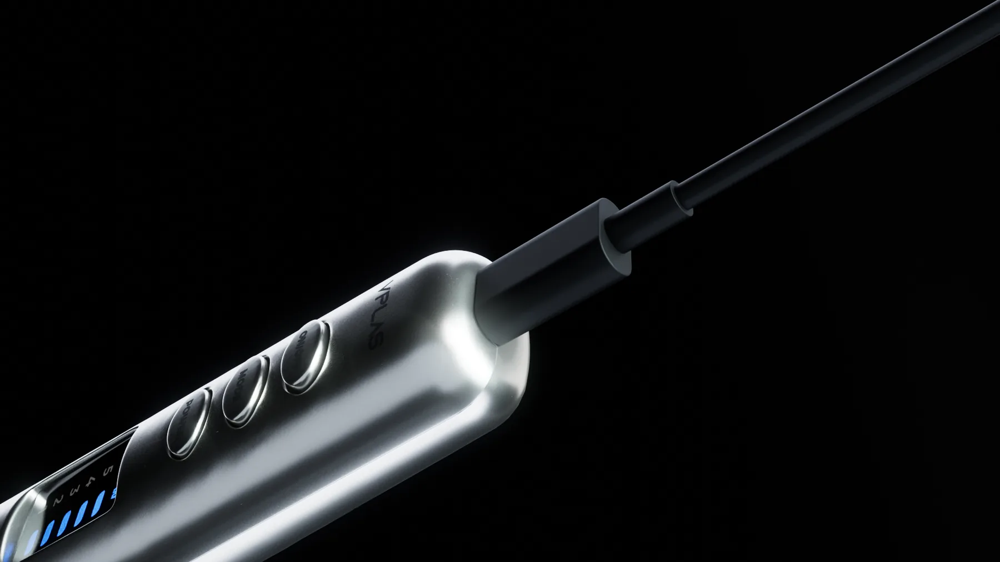
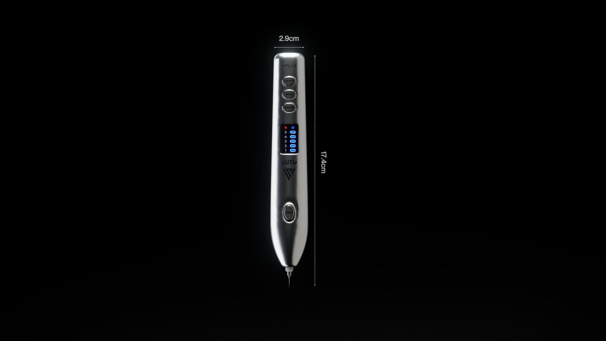
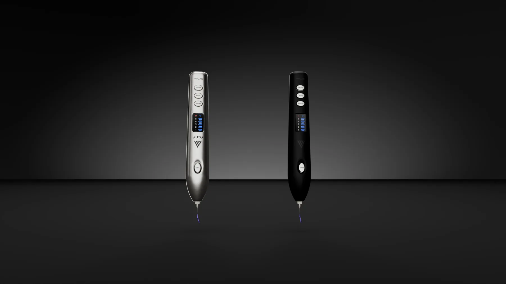

Dự án · VPLAS · 2025
VPLAS — TVC thiết bị plasma
VPLAS là thiết bị plasma cầm tay do một đơn vị Việt Nam sản xuất. Họ cần một TVC chiếu trên màn LED khổ lớn tại sự kiện ra mắt, cộng một bộ ảnh sản phẩm dùng cho truyền thông sau đó. Toàn bộ hình ảnh dựng 3D — không quay thực tế, vì lúc làm sản phẩm còn chưa lên dây chuyền.
Bài toán
Ba thứ khó nhất
Chưa có sản phẩm thật để quay
Chỉ có file CAD và vài ảnh mẫu thử. Mọi chi tiết bề mặt, khe hở, độ bo cạnh đều phải dựng lại cho đúng với thứ sẽ xuất xưởng — sai một chi tiết là khách nhận ra ngay.
Màn LED 10,5 × 3 mét
Tỉ lệ rất rộng và người xem đứng gần. Bố cục phải đọc được ở khoảng cách ba mét, còn chi tiết bề mặt phải chịu được độ phân giải lớn mà không vỡ.
Kim loại đánh bóng trên nền tối
Chất liệu khó nhất để render sạch. Không có gì xung quanh để phản chiếu thì bề mặt sẽ chết màu, còn phản chiếu quá tay thì mất form.
Hình ảnh
Từng cảnh, và lý do






Cách làm
Năm bước
Đọc brief và chốt đường hình
Khách gửi kịch bản kèm thông điệp từng cảnh. Việc đầu tiên là chốt bố cục và góc máy ở dạng khối xám, trước khi đụng tới chi tiết — duyệt ở bước này mất một ngày, duyệt sau khi render xong mất một tuần.
Dựng từ file CAD
File STEP của khách nhập vào rồi dựng lại phần vỏ cho sạch topology. CAD cho đúng kích thước nhưng lưới không dùng trực tiếp để render được.
Ánh sáng trước, vật liệu sau
Toàn bộ cảnh dựng sáng khi vật thể còn là chất xám trung tính. Ánh sáng đúng ở trạng thái xám thì gần như chắc chắn đúng khi có vật liệu.
Render tách lớp
Mỗi cảnh xuất riêng sản phẩm, nền, bóng đổ, phản chiếu và lớp phát sáng. Khi khách yêu cầu chỉnh nền tối hơn thì sửa trong vài phút thay vì render lại vài tiếng.
Dựng phim và hoàn thiện
Ghép mười phân cảnh, chỉnh màu tổng thể, thêm nhạc và hiệu ứng âm thanh, xuất đúng tỉ lệ màn LED của địa điểm tổ chức.
Muốn làm được shot như thế này?
Đây là đúng những kỹ năng trong lộ trình LXAM Academy — dựng hình, ánh sáng, render tách lớp, dựng phim. Học bằng dự án thật, có người sửa bài.